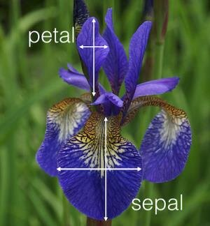
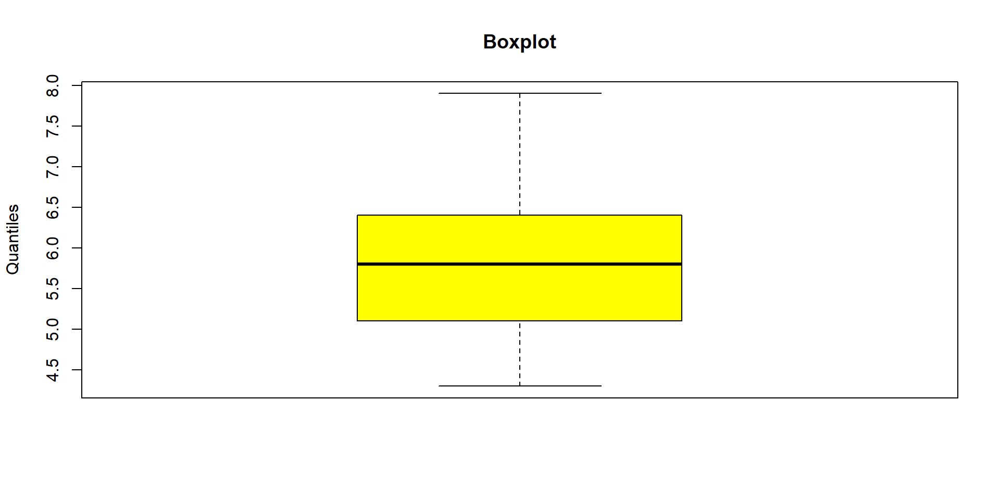

Statistique descriptive
Introduction
Objectif : décrire de façon synthétique et parlante des données observées pour mieux les analyser.
La statistique descriptive
La statistique descriptive étudie certaines caractéristiques d’une population. Ces caractéristiques sont appelées caractères ou variables statistiques.
- La statistique descriptive à une dimension ou univariée
- La statistique descriptive à deux dimensions ou bivariée
La statistique descriptive à une dimension / univariée
Vocabulaire
- Population : ensemble d’éléments homogènes auxquels on s’intéresse.
- Individus : éléments de la population
- Echantillon : une partie de la population étudiée
Note
Les observations obtenues sur une population ou sur un échantillon forment un ensemble de données sur lesquelles s’appliquent méthodes de la statistique descriptive. Le choix de l’échantillon est donc important !
Pour chaque individu → Une ou plusieurs variables
Variable qualitative
Variable quantitative (intrinsèquement numérique)
- Variable discrète (dans \(\mathbb{Z}\))
- Variable continue (dans \(\mathbb{R}\))
Un peu de R pour illustrer ces notions.
On utilise le jeu de données « iris » de R.
Il contient 150 observations de 5 variables.
Sepal.Length: longueur de la sépaleSepal.Width: largeur de la sépalePetal.Length: longueur du pétalePetal.Width: largeur du pétaleSpecies: espèce de la fleur.

La fonction head() permet d’avoir un aperçu des premières lignes du jeu de données :
Sepal.Length Sepal.Width Petal.Length Petal.Width Species
1 5.1 3.5 1.4 0.2 setosa
2 4.9 3.0 1.4 0.2 setosa
3 4.7 3.2 1.3 0.2 setosa
4 4.6 3.1 1.5 0.2 setosa
5 5.0 3.6 1.4 0.2 setosa
6 5.4 3.9 1.7 0.4 setosaOn a ainsi :
1 variable qualitative (
Species)4 variables quantitatives (
Sepal.Length,Sepal.Width,Petal.LengthetPetal.Width)
Représentations graphiques
Représensation graphique d’une population selon une variable qualitative, ici Species
- Tableau des effectifs pour une variable (
Species) dans une population donnée
- Tableau des fréquences pour une variable (
Species) dans une population donnée
- Diagramme en baton des effectifs
Représensation graphique (II)
Représensation graphique d’une population selon une variable quantitative, ici Petal.Width
La fonction summary() permet de visualiser des statistiques de base pour chaque variable.
- Pour les variables quantitatives :
- minimum, maximum, moyenne, médiane, 1er quartile, 3ème quartile.
- Pour les variables qualitatives :
- nombre d’observations par classe
Sepal.Length Sepal.Width Petal.Length Petal.Width
Min. :4.300 Min. :2.000 Min. :1.000 Min. :0.100
1st Qu.:5.100 1st Qu.:2.800 1st Qu.:1.600 1st Qu.:0.300
Median :5.800 Median :3.000 Median :4.350 Median :1.300
Mean :5.843 Mean :3.057 Mean :3.758 Mean :1.199
3rd Qu.:6.400 3rd Qu.:3.300 3rd Qu.:5.100 3rd Qu.:1.800
Max. :7.900 Max. :4.400 Max. :6.900 Max. :2.500
Species
setosa :50
versicolor:50
virginica :50
On a aussi la fonction describe du package Hmisc.
iris
5 Variables 150 Observations
--------------------------------------------------------------------------------
Sepal.Length
n missing distinct Info Mean pMedian Gmd .05
150 0 35 0.998 5.843 5.8 0.9462 4.600
.10 .25 .50 .75 .90 .95
4.800 5.100 5.800 6.400 6.900 7.255
lowest : 4.3 4.4 4.5 4.6 4.7, highest: 7.3 7.4 7.6 7.7 7.9
--------------------------------------------------------------------------------
Sepal.Width
n missing distinct Info Mean pMedian Gmd .05
150 0 23 0.992 3.057 3.05 0.4872 2.345
.10 .25 .50 .75 .90 .95
2.500 2.800 3.000 3.300 3.610 3.800
lowest : 2 2.2 2.3 2.4 2.5, highest: 3.9 4 4.1 4.2 4.4
--------------------------------------------------------------------------------
Petal.Length
n missing distinct Info Mean pMedian Gmd .05
150 0 43 0.998 3.758 3.65 1.979 1.30
.10 .25 .50 .75 .90 .95
1.40 1.60 4.35 5.10 5.80 6.10
lowest : 1 1.1 1.2 1.3 1.4, highest: 6.3 6.4 6.6 6.7 6.9
--------------------------------------------------------------------------------
Petal.Width
n missing distinct Info Mean pMedian Gmd .05
150 0 22 0.99 1.199 1.2 0.8676 0.2
.10 .25 .50 .75 .90 .95
0.2 0.3 1.3 1.8 2.2 2.3
lowest : 0.1 0.2 0.3 0.4 0.5, highest: 2.1 2.2 2.3 2.4 2.5
--------------------------------------------------------------------------------
Species
n missing distinct
150 0 3
Value setosa versicolor virginica
Frequency 50 50 50
Proportion 0.333 0.333 0.333
--------------------------------------------------------------------------------Cette fonction permet d’obtenir pour chaque variable :
- le nombre d’observations,
- le nombre de valeurs manquantes,
- la moyenne,
- les quantiles à 5, 10, 25, 50, 75, 90, et 95%,
- les 5 plus basses valeurs,
- et les 5 plus hautes valeurs.
Pour les variables qualitatives, describe() donne :
- le nombre d’observations,
- le nombre de valeurs manquantes,
- et le nombre de niveaux pour la variable ; ainsi que le nombre d’observations pour chaque niveau de la variable (et la proportion).
Variables quantitatives
La statistique descriptive à deux dimensions
coming.

ISTOM, Ecole Supérieure d’agro-développement International